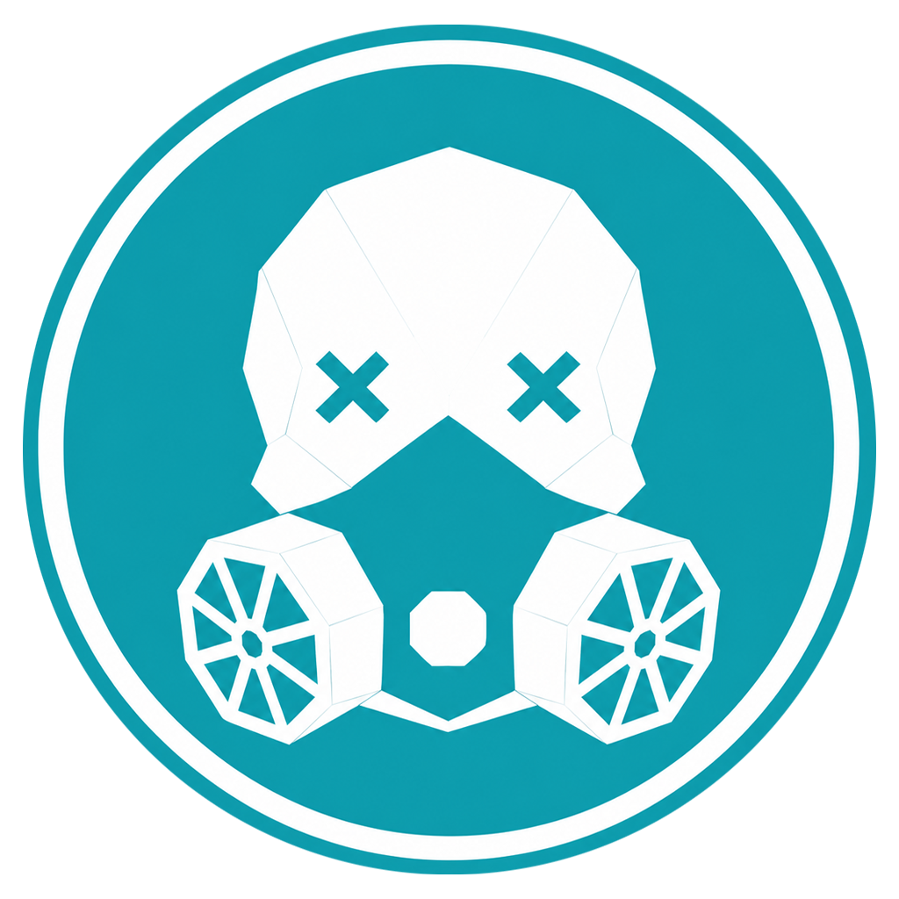
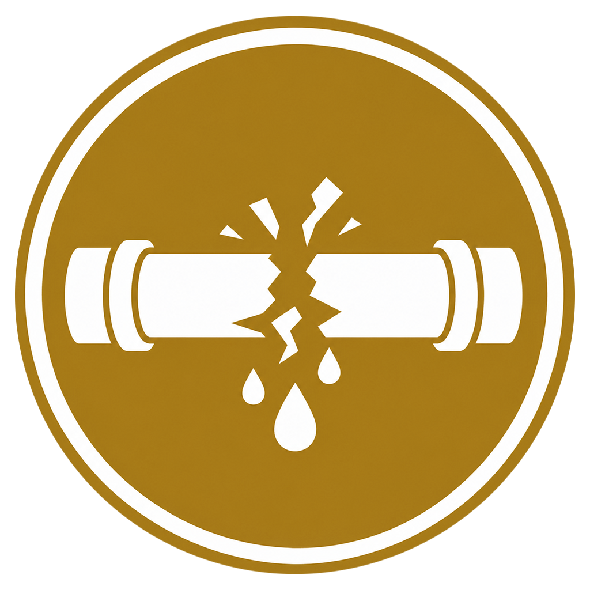

TraceTheToxin
Analyze contamination distributions, track hazardous dispersion grids, and isolate safety vectors.

TraceTheBreak
Diagnose structural anomalies, trace infrastructure system faults, and map failure points.
A minimalist hub gathering interactive analytical utilities, environmental tracking modules, and simulation sandboxes.

Analyze contamination distributions, track hazardous dispersion grids, and isolate safety vectors.

Diagnose structural anomalies, trace infrastructure system faults, and map failure points.